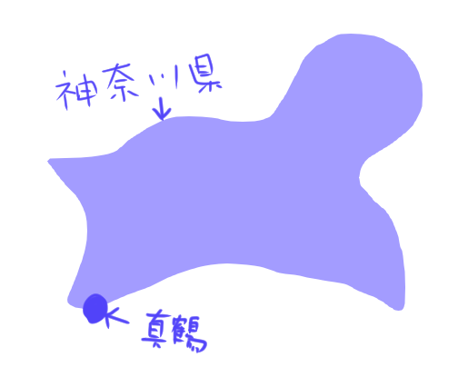

真鶴は神奈川県にあります。神奈川県の形を犬に見立てると横浜が頭、前足が三浦半島、後ろ足が箱根。真鶴は後ろ足の先端に爪のようにちょっと飛び出ている辺りに真鶴があります。
 真鶴半島には大きな常緑樹の森が広がり、今も大切にされています。豊かな森では微生物が活発に活動しています。微生物は落ち葉などを分解し無機塩類にしてくれます。無機塩類の形になっていると、再び生き物が栄養として利用することが出来ます。森で作られた無機塩類は雨に流され海に流れ込み、海を豊かにしてくれるのです。
また真鶴半島をつくる岩は溶岩からできていて、とても固いです。溶岩からできているためデコボコが多いのも重要です。海の生き物は、体を岩に付けて体を安定させていれば、後は口を開けていれば波に乗ってきた栄養分を捕まえることが出来ます。岩にデコボコが多いのは身を隠す場所にもなるので、多様な生き物が暮らせる場所になります。
真鶴海岸から沖へ2キロほど行くと海底はどんどん深くなり10キロ先は深海の１０００ｍの深さのある谷になります。
海の生き物たちの死骸や食べきれなかった栄養分は軽いものですが、それでも重たさがあるので、ゆっくりと沈んでいきます。真鶴海岸沿いにでは、沖にある急な谷に沿って沈んでいきます。ある日、北からの冷たい海水が海底に流れ込むと、底に沈んでいた養分がかき回されて海水と一緒に沸き上がってきます。巻き上げられた栄養を求めて多くの生き物が集まってきます。